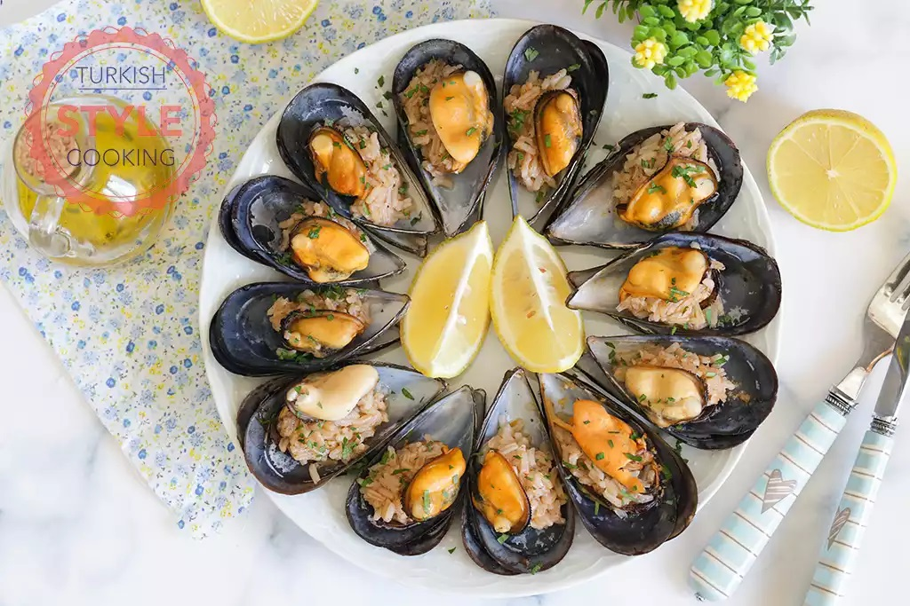
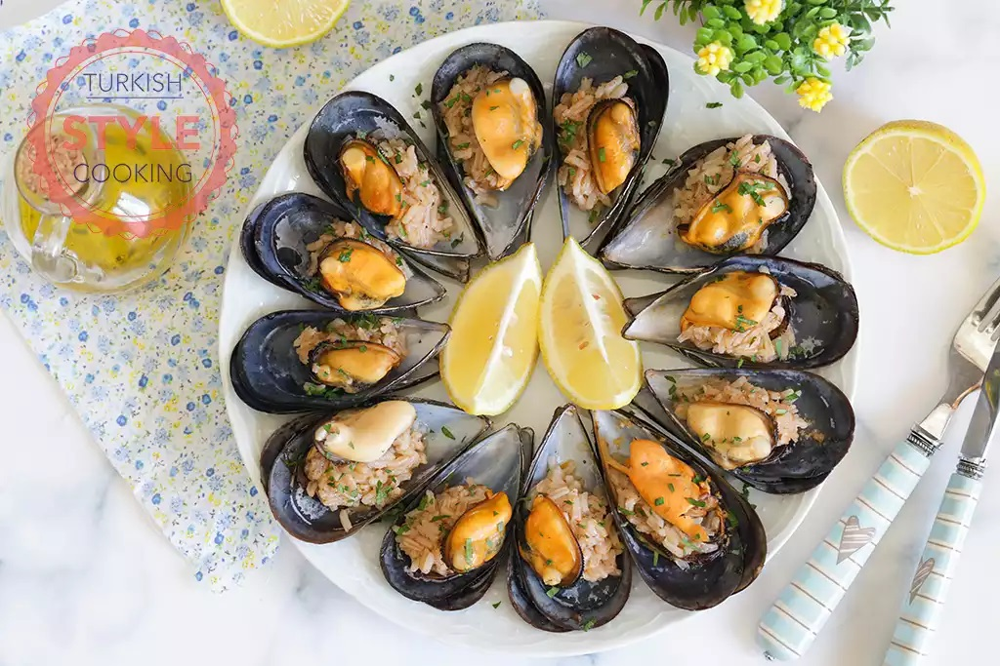

Stuffed oysters
It is one of the very popular foods in Turkey. It is clams served on half a shell, mixed with seasoned rice, and lemon juice is placed on it.
It is one of the very popular foods in Turkey. It is clams served on half a shell, mixed with seasoned rice, and lemon juice is placed on it.
